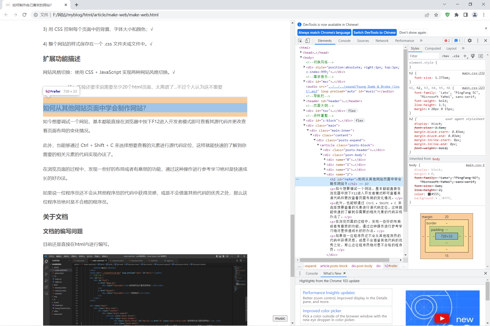
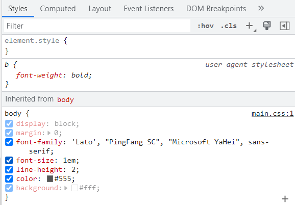
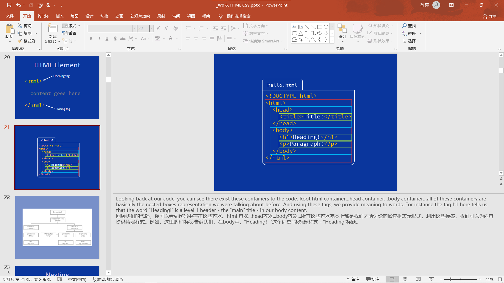

一切的起点
有很多的知识都相当简单，却因为互联网的繁杂信息让我们眼花缭乱而无从下手。为此，我决定把所有收集过的信息都放在一个网站上，以便同学们的学习。而这，只是一个开始。
如何速通Web技术应用课程？
1、关于课程绩点问题
本课程为专业选修课，不计入保研绩点的计算中，但会计入奖学金的绩点排名计算。
2、关于结课考核问题
本课程的考核相等简单。还记得我做这个网站用了三个月，老师只用了不到三分钟就结束了考核= =
那么，老师都在考核什么呢？
众所周知，这门课是以学生所写的web项目作为课程分数评定的依据，而web项目在互联网上到处都有，那么学生们直接在网上找一个看上去就很强的项目交上去不就满分了么？确实是这样的。因此老师不仅会看你的网页是否优秀，也会看你是否真的掌握相关知识，对项目的源代码的熟悉程度是否较高。
老师考核我时，问了四个问题。
第一个是：请解释类选择器是什么（关于css的简单知识点。用来判别该同学到底这学期有没有在学这门课程）
第二个是：介绍你的博客（了解你实现了什么功能。点出菜单栏、跑马灯功能之后，请秀出自己除课程要求之外的功能）
第三个是：请修改菜单栏的颜色（考察学生是否熟悉自己的项目代码。如果是在网上随便找了一个项目就拿来用的话，大概不会知道该部分代码在css的什么区域，也不会知道菜单栏对应的class是什么名字
第四个是：解释跑马灯效果是如何实现的（考察对js的代码理解。如果是在网上找的代码，又不仔细琢磨实现原理的话，那么学生并不能解释清楚原理，可以看出该内容并非学生的学习成果。
3、如何达到结课要求
下面解释如何达到这三个要求：是否掌握相关知识，网页UI是否优秀，对项目的源代码是否熟悉。
1）知识掌握问题：
该选修课并非是深入学习前端知识，仅限于HTML、CSS、JS的理解运用，因此难度不高，很快即可学完并开始编写结课所需的内容。
在浏览各种代码时，总是会有很多不知道的代码出现。此时应该复制代码中的最小单元并在网上搜索。
例如研究下面一段js代码
function move() {
wrap.scrollLeft++;
if (wrap.scrollLeft >= first.scrollWidth + mid.scrollWidth) {
wrap.scrollLeft = 0;
}
}
如果我们不明白scrollLeft的意思，那么直接复制到搜索引擎去查找即可得知其相关的知识点及其使用方法。只有理解了代码，才能在他人提问时自信地做出解答。
请注意，制作网站并不是要全部系统地学会之后再开始的，而是在制作的过程中学习。
2）网页UI问题：
优秀的页面，是一个用户选择浏览该网站的主要原因。太简陋了，用户不想看；太花哨了，用户就懒得看。因此，恰到好处的页面是很重要的。
那么，如何解决这个问题呢？当然是学习各大成功网站的布局啦，例如知乎、B站专栏、又或是其他博客的布局。
我以该博客的布局作为自己博客的布局依据。（一开始以为是该博客大佬自己开发的页面，令我直呼佩服！后来发现其实是一个开源主题...）
当然不是照搬过来，而是通过浏览器自带的F12调试功能学习网站的html及其css源代码，在搬运的时候请理解每一段代码的含义。动手试试，你会发似乎也不是那么难嘛。
（F12调试功能的使用方法我已经写在这了，点击转跳~)
3）对项目源代码的熟悉程度：
这要求我们不能照搬别人的源代码，需要在理解后根据自己的网站进行修改，融入到对应的位置上去。因此，了解其代码在做什么的必须的，然后才能随心所欲地修改内容。
最主要的是要弄清楚每一行代码中的各种变量代表着什么，才能化为己用，以后开发才会得心应手。
结课所需的能力要求介绍完，接下来便可以开始学习完成web项目所需的知识点和功能了。
速通web课程功能清单
基本功能描述
个人简历栏目：该栏目包括经历、兴趣、爱好等个人信息。√
友情链接栏目：该栏目提供其他常用网站的链接。√
下拉式菜单：网站通过下拉式菜单链接到各个页面。下拉菜单必须符合下列要求：√
1) 主菜单条显示一级栏目；√
2) 子菜单显示二级栏目，每个一级栏目下应该包含二级栏目；√
3) 当鼠标移动到主菜单条上时，应显示其子菜单，并且被选中的菜单变色；√
动态显示时间：用JavaScript 动态显示时间（显示到秒），并根据时间的不同显示不同的问候语(早上好，上午好...)。(置于首页) √
跑马灯：用JavaScript 在页面的显示跑马灯效果的文字“欢迎光临我的博客”，文字在页面的状态栏内循环滚动。(置于首页) √
用CSS控制网页样式：
用 CSS 控制网页样式，具体要求如下：√
1) 用 CSS 控制下拉式菜单的样式；√
2) 用 CSS 控制网页中的文字链接样式；√
3) 用 CSS 控制每个页面中的背景、字体大小和颜色；√
4) 整个网站的样式保存在一个 .css 文件夹或文件中。√
扩展功能描述
网站风格切换：使用 CSS + JavaScript 实现两种网站风格切换。√
注：实验还要求说需要至少20个html页面，太离谱了...不过个人认为这不重要，重要的是功能完善。
如何仿照目标网页制作自己的网页？
如今想要调试一个网站，基本都能直接在浏览器中按下F12进入开发者模式即可查看其源代码并更改代码查看页面布局的变化情况（用以学习对应代码的作用）。
在浏览页面的过程中，发现一些好的布局或者有意思的功能，通过这种操作进行参考学习绝对是快速成长的好办法。
此外，也能够通过 Ctrl + Shift + C 来定位想要查看的元素的源代码，这样就能快速的了解到你需要的相关元素的代码实现办法了。
通过F12调试网页来查看源代码
喜欢某一个页面的文字或样式或大小，想要化为己有时，可以通过这种方式找到对应CSS代码，并复制下来修改并放到自己的CSS中，能够很快地达到统一文字样式的目的。其他效果也是如此，例如主页面中的问候窗口就是我从其他主页中直接
当你想要知道某一CSS内容有什么用/改变时会发生什么变化，可以通过取消/重选CSS效果观察页面变化来判断有什么效果，这样能够快速了解到有效的CSS代码。
在调试的Style中点击取消或重选CSS代码，以了解其作用
如果说一位程序员还不会从其他程序员的代码中获得灵感，或是不会借鉴其他代码的优秀之处，那么这位程序员绝对是不合格的程序员。
速通Web知识点
最近发现了一个非常全面且有趣的Web自学网站（资源来自MIT开放课程），虽然是全英文的课件，但是词汇简单且专业词汇附有讲解，很容易看懂！
如果只是想速通的话，学习其中HTML与CSS课件的2~97页和JavaScript课件就足够了，我已经翻译好了课件并完成了详细的讲解！
（如果是通过压缩包访问这个博客的话，可以直接在myblog文件夹中打开这两个PPT。若点击这两个课件链接的话会重复下载...）
食用方法：不要全屏PPT！！！，知识讲解都在ppt的注释中，请保持如下方式进行学习。
重要说明：我发现这个课件相等不错，比起从零写教程，不如把课件翻译一遍以供大家参考...因此我把自己编写的知识点都屏蔽掉了，大家直接看高质量课件吧~
但是课程相关功能实现的讲解还是有的，放这里了。
关于文档
文档的编写问题
目前还是直接在html内进行编写。

其实我有考虑过用Markdown来写文章，但是一是没找好用什么把Markdown转html，二是由于还没有做好页面，使用不大敢直接用软件转文档。
所以我就只能先这么做啦...
事实上，我很想做到像notion一样直接编写和拖动文章区块的，可惜的是这玩意好像有点难理解。（主要是因为notion的html源代码太乱了，我在想是不是有意这么做以防止我来模仿的emmm）也许以后进一步完善网站之后是可以直接这么做的。
文档信息全页面同步问题
由于是手动在html写文章，所有页面相关内容更新都要自己去同步，就很麻烦（你问我为啥不找个办法让他自动同步？我要是会这个，还能沦落到手搓html文章的地步?...）
文档的大纲导航
这个大纲样式是按照Notion的左侧大纲模仿制作的，但是由于自己看不懂Notion的源代码，所以自己手搓了一个。（模仿得很恶劣，以后一定完善！嘤嘤嘤(╥╯^╰╥) ）
教程编写之路的坎坷...
终于结束了...